What the Mario brains' weights say
Weights study, 2026-11-12, leg 1. Copies of finished checkpoints: Cato2A and Cato2B at chunk 83, FabiusA at chunk 39, each against its chunk 0. Scripts: weights.py, probe.py, probe2.py in mario/scipio. No game was played; the brains answered recorded coach frames. Weights alone are not behaviour, so every claim about cause below comes from a test where inputs or parts were blanked.
1. The brain mostly repeats the button it is holding
The coach's button is the same as the one before on 77% of frames. The brain sees which buttons are held. On the coach's own runs (24 levels, 5,760 frames) it gets the easy frames and misses about half of the frames where the button has to change.
| What the brain is given | Cato2A right | Cato2B right | FabiusA right |
|---|---|---|---|
| everything (as in play) | 84.6% | 85.1% | 83.4% |
| frames where the button repeats | 94.2% | 92.8% | 94.4% |
| frames where the button changes (23%) | 52.3% | 59.2% | 46.1% |
| screen blanked, body sense kept | 68.5% | 59.7% | 74.3% |
| only the four held-button inputs, all else blank | 62.4% | 72.3% | 73.8% |
| everything except the held buttons | 56.8% | 50.7% | 51.4% |
scratch/probe2_*.json. Blanking is a rough tool: a blank screen is a picture the brain never saw.
2. Why Cato2 stands still on 4-4
Both Cato2 seeds score x 40 on 4-4 in every one of chunks 74 to 83. The first frame of 4-4, nothing held: the brain answers "no button". Write "run is held" into the body sense of the same frame: it answers "run". Feed its own answer back as the held button 20 times on that frame: "no button" 20 times. Cato2A does the same on 4-2 (x 181 in play). On the other 22 levels the first answer is "run". FabiusA answers "run" or "run+jump" on all 24.
3. What moved during training
| Connection | Synapses | Cato2A: share of all change | FabiusA: share of all change |
|---|---|---|---|
| screen and body to the middle layer | 905,216 | 90.2% | 32.2% |
| recall memory to the middle layer | 905,216 | none | 31.3% |
| "what came next" to the middle layer | 905,216 | none | 11.8% |
| working trace to the middle layer | 65,536 | 7.5% | 2.7% |
| middle layer to outputs (both ways) | 3,584 / 163,328 | 2.3% | 22.0% |
In Cato2 the change is spread evenly over the screen: every input group moved about the same per input (2.0 to 3.0). Brighter cells below moved more.
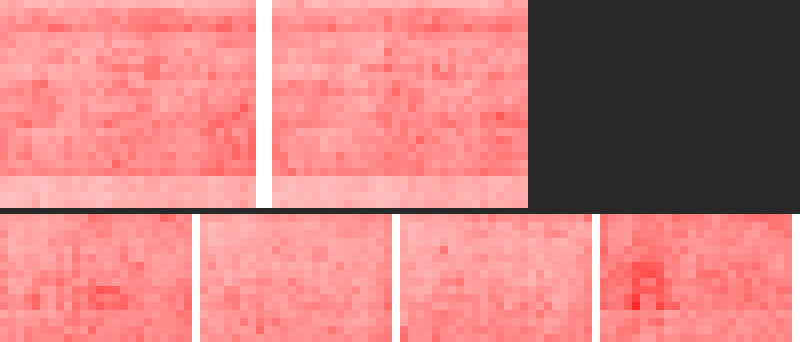
4. Three of the seven buttons were never taught
The coach never presses right, right+jump or jump: 0 of 62,057 pile rows. In both Cato2 seeds those three outputs carry one shared "stay off" pattern (their weights correlate 0.8 with each other, bias -0.08, where the four used buttons sit near 0).
5. What pushes "jump"
First-order map from each input to "a jump button minus a no-jump button" (through the middle layer, ignoring how active each unit is). Red: more of this input, more jump.
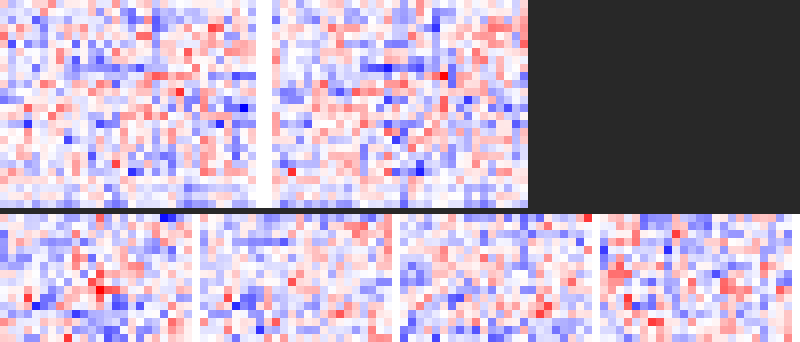
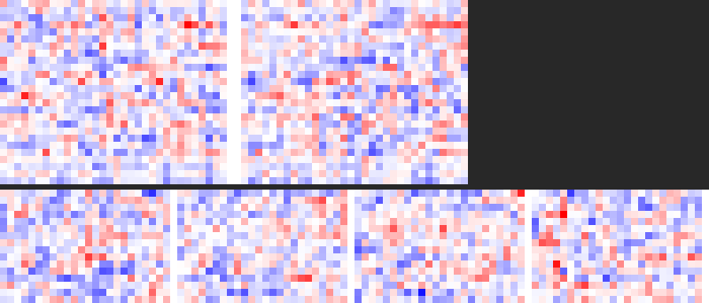
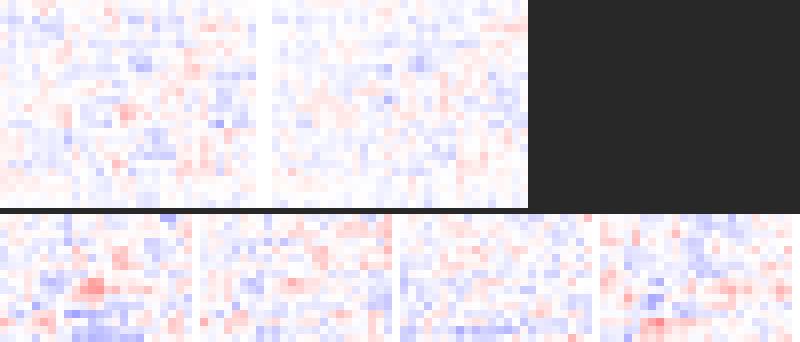
No clean shape, such as "something in front of Mario", shows at this level. Neighbouring cells do agree more than chance (correlation 0.45 to 0.63), so it is not pure noise. The same cell now and one decision ago carry weights that agree (+0.53): the brain mostly adds the two frames, it does not subtract them, so it is not reading motion from them.
6. Single units
The four units that push jump hardest and the four that hold it back most, Cato2A. Each picture is what that unit listens to.
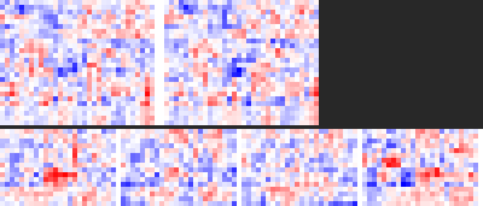
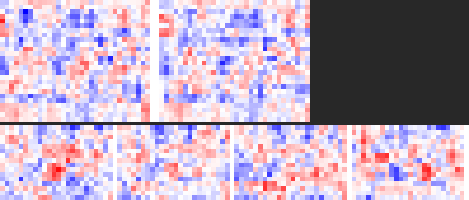
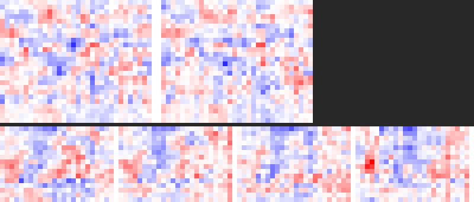
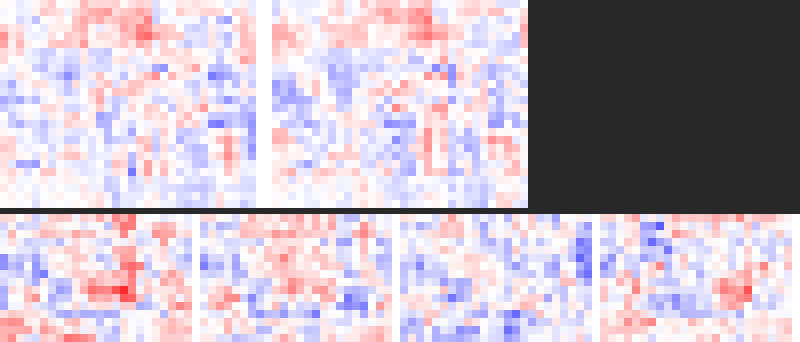
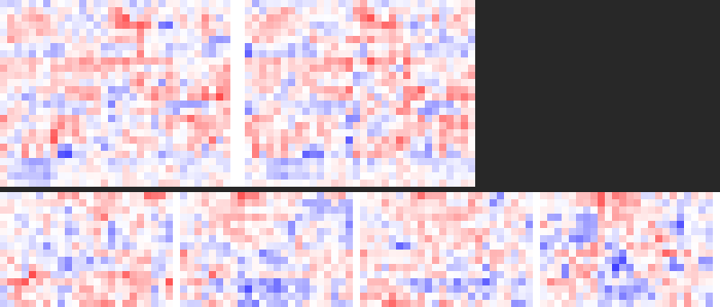
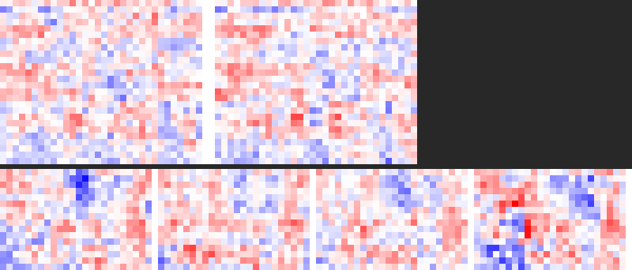
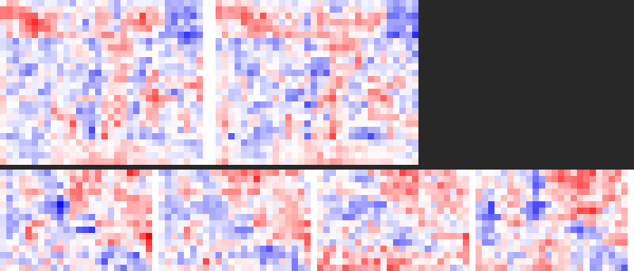
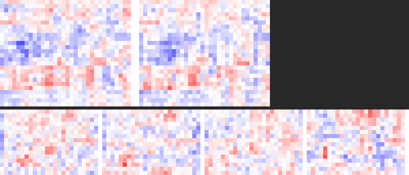
7. Does Fabius use its extras?
Yes for the recall memory, by weight and by test. Its path into the middle layer grew as strong as the direct senses (5.15 against 5.07). Switched off on 720 coach frames, 25% of answers change and agreement falls from 85.8% to 75.4%. The working trace: switched off, 6% of answers change and agreement does not fall. The prediction outputs moved as much as the button outputs; whether they help play is not answered here. The all-zero "grid" tables in the recall memory are by design: they only apply to memories older than 8 steps, and the memory holds 8.
What stayed unexplained
- Play itself. These are the coach's frames, not the brain's own path. The death map and a traced death wait for leg 2.
- Whether the held-button habit is what stops the runs near x 1,000. It explains the 4-4 standstill. The rest is a strong lead, not a result.
- What single units mean. Only unit 124 reads as a thing a person would name.